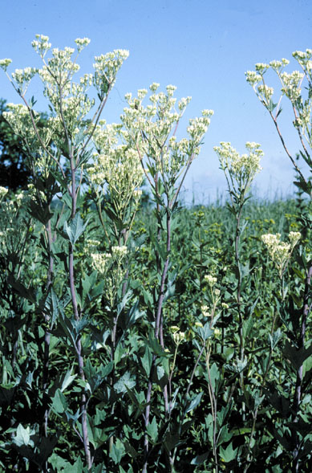
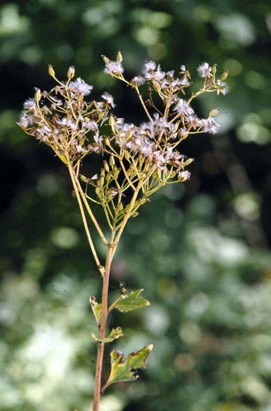
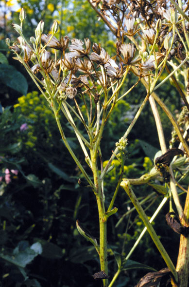
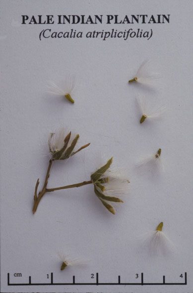

Cacalia Atriplicifolia
Family: Asteracea
Pale Indian Plantain
Swink/Wilhelm # 8



Click to view larger photo
FLOWERING: Late July - Late September
SEED TIMING: Mid-September to late October
HABITAT: Dry mesic savannas and prairies
DIAGNOSTIC FEATURES: 3 - 6 feet high. Flowers are greenish in flat-topped clusters and are supported by stiff slender bracts. This species is smooth and glaucous (with a waxy bloom). Leaves irregularly fan shaped, coarsely toothed or lobed, pale beneath.
TO PICK: Dark brown seed attached to fuzzy pappus. Rule of thumb with all composites; when any seed is fuzzy, pick the entire head. Break off, let dry in open air and then store in paper bag.